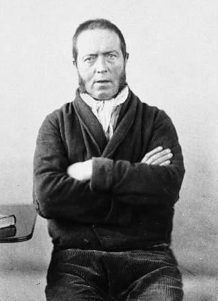

Case Details:
In 1843 in England, Daniel M'Naghten shot Edward Drummond, the secretary to British Prime Minister Robert Peel.
Verdict:
He was acquitted by reason of insanity after extensive medical testimony demonstrated severe paranoid delusions. A public uproar caused the House of Lords to decided to create the M'Naghten rule. Under this M’Naghten test, all defendants are presumed to be sane unless they can prove that–at the time of committing the criminal act–the defendant’s state of mind caused them to (1) not know what they were doing when they committed said act, or (2) that they knew what they were doing, but did not know that it was wrong. A common example for the second prong is if a person is acting on orders from “God.” The test we still use to this day. (Cornell Law, 2020).